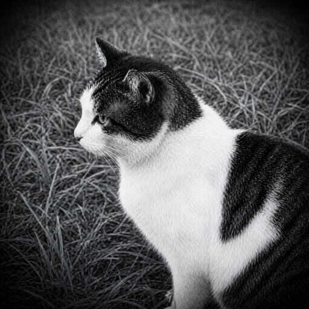
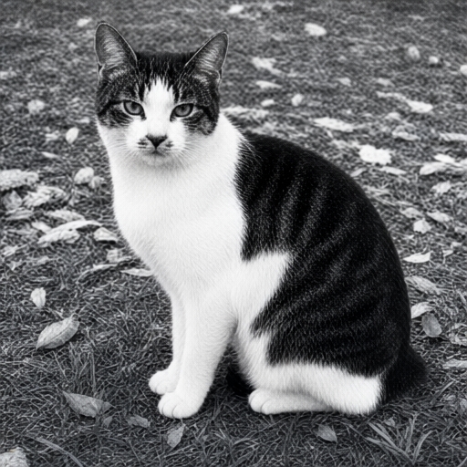
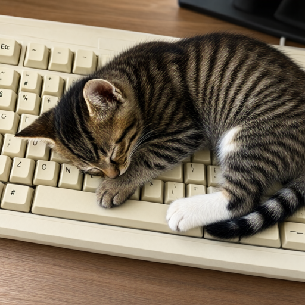
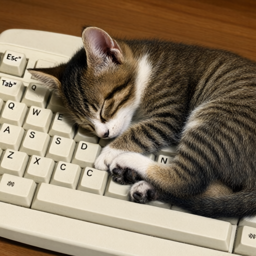

The local vision model received the source image and wrote a detailed gzip-wrapped llmPEG text artifact with temperature 0, seed 42, and /no_think.
Cases marked pass0/2
Mean visual proxy0.685
Mean layout0.693
Mean palette distance0.083
Mean dHash0.523
The local GPU workflow received only rendered text and generated a 512×512 image with seed 42, 30 steps, CFG 3.5, Euler sampling, and the simple scheduler.
Model boundary: the image generator received the rendered text prompt only. It never received the source image or source pixels.
Structural proxy band: moderate. 0/2 cases are marked pass in their checked-in results; mean dHash is 0.523. These structural metrics do not prove identity preservation, so inspect and rate each pair below. With n=2, this is a product probe—not a population estimate.
Qwen baseline → Qwen challenger: mean visual proxy 0.651 → 0.685 (+0.034). Use the three-way comparisons below to judge identity directly.
CASE qwen-monochrome-cat
REJECTED
Monochrome cat · creator/rater experiment



Visual proxy0.700
Layout0.662
dHash0.453
Palette distance0.066
Visual proxy change: 0.632 → 0.700 (+0.068)
Measured outcome: Challenger rejected. The two pixels-only A/B judgments preferred whichever image appeared second, so the order-swapped logical verdicts disagreed; semantic median also fell from 85 to 80.
179.0:1 plain artifact ratio · 345,840 → 1,932 bytes · 319.3:1 gzip stored ratio · 1,083 bytes on disk
Prompt and machine-readable result
Create a new image from this semantic description.
Primary request: Black-and-white medium shot of a domestic shorthair cat with dark tabby markings and white fur, positioned in an outdoor setting. The cat is facing forward-left (three-quarter view) rather than strict profile, looking directly at the camera with visible eyes and ears perked up. It has a distinct white blaze running down its forehead between the ears to the nose. A large patch of dark tabby fur covers the back and sides; the chest, front legs, paws, muzzle, cheeks, and belly are predominantly white. The cat is sitting upright on all fours with tail tucked or resting behind. Background consists of scattered leaves, debris mixed with grass rather than uniform blades.
Fidelity goal: Maximize resemblance to this specifically described subject. Prioritize distinctive markings, proportions, pose landmarks, crop, and object geometry over generic beauty or creative interpretation.
Style/medium: vintage black-and-white photography, grainy texture, soft focus edges (halo effect), medium depth of field
Canvas: 1491x1510 (0.987:1)
Composition:
- {0:100%, 25%:98%}: Cat occupies central and right portions. Head at top-left (approx x=30-45, y=10), body extends to bottom-right. Ears visible; eyes open looking forward/left.
- {2:98%, 0:70%}: Ground surface with scattered leaves and debris mixed with grass texture rather than uniform blades of grass.
Palette: #1a1a1a, #f5f5dc
Text to render verbatim when possible:
- none
Constraints: preserve every described landmark, hierarchy, and spatial relationship; add no
unlisted subject, object, marking, or decoration.
This is a semantic reconstruction, not the original.
Avoid: strict profile view only, no white blaze on forehead, uniform grass background; extra logos; watermarks; invented claims.
Your assessment
Source: Barmanru · Public domain dedication · reconstruction generated from text only
{kind=link}
{kind=link}
CASE qwen-keyboard-cat-holdout
REJECTED
Keyboard cat · untouched holdout



Visual proxy0.670
Layout0.724
dHash0.594
Palette distance0.101
Visual proxy change: 0.670 → 0.670 (-0.000)
Measured outcome: Challenger rejected. The order-swapped pixels-only verdicts disagreed, the deterministic proxy was effectively unchanged (0.669898 to 0.669543), and semantic median fell from 75 to 70.
263.2:1 plain artifact ratio · 612,448 → 2,327 bytes · 484.5:1 gzip stored ratio · 1,264 bytes on disk
Prompt and machine-readable result
Create a new image from this semantic description.
Primary request: medium resolution digital photo. A small brown and white tabby kitten is curled up asleep directly on the keys of an off-white plastic computer keyboard. The cat's head rests near the 'N' key while one paw covers a portion of the spacebar area; its eyes are closed in deep sleep, ears perked but relaxed against the fur. Soft shadows fall beneath the body from above-left lighting direction. Visible texture includes fine tabby stripes on back and legs, white chest patch, pink inner ear visible at angle, small black nose tip, and paws with dark claws tucked under soft paw pads.
Fidelity goal: Maximize resemblance to this specifically described subject. Prioritize distinctive markings, proportions, pose landmarks, crop, and object geometry over generic beauty or creative interpretation.
Style/medium: medium and visual treatment with soft focus around edges due to shallow depth of field effect typical for indoor pet photography.
Canvas: 2048x1536 (1.333:1)
Composition:
- {0,68.5},{147.2,93.5}: Kitten body occupies central-right area; head positioned left-center overlapping keyboard keys.
- {0,68.5},{147.2,93.5}: Keyboard spans entire lower-left to bottom edge of frame with visible key labels and slight wear marks on surface texture.
- {0,0},{100,100}: Wooden desk background appears in upper-right corner showing grain pattern under warm ambient light conditions.
Palette: #8B7355, #F5E6D3, #2C241B
Text to render verbatim when possible:
- "\"Esc\""
- "\"Tab\""
- "\"Q\" \"W\" \"E\" \"A\" \"S\" \"D\""
- "\"Z\" \"X\" \"C\""
Constraints: preserve every described landmark, hierarchy, and spatial relationship; add no
unlisted subject, object, marking, or decoration.
This is a semantic reconstruction, not the original.
Avoid: high-resolution sharpness or motion blur absence since original image exhibits slight graininess consistent with lower-quality sensor capture, inverted lighting direction causing shadows above cat instead of below it as observed in actual scene; extra logos; watermarks; invented claims.
Your assessment
Source: Remedios44 · Public domain dedication · reconstruction generated from text only
{kind=link}
{kind=link}